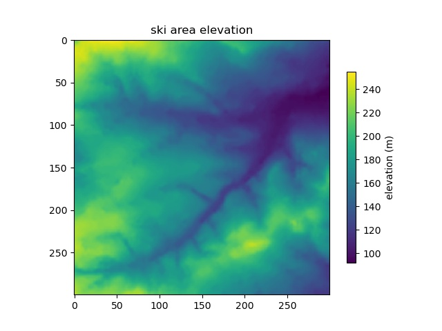
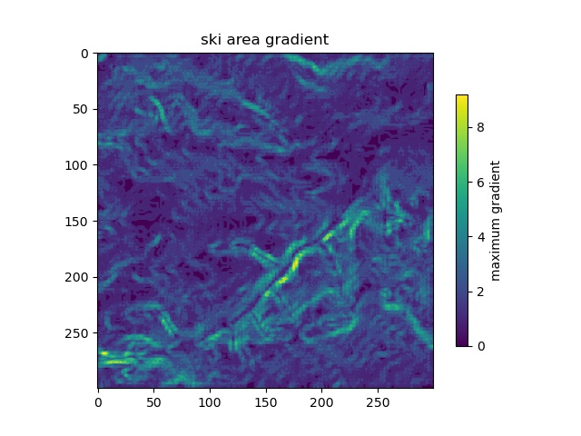
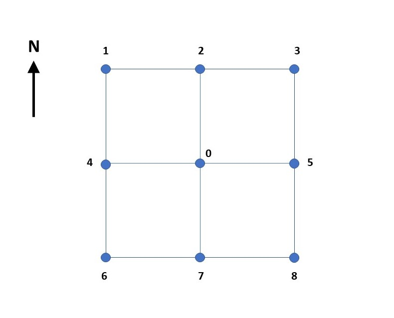
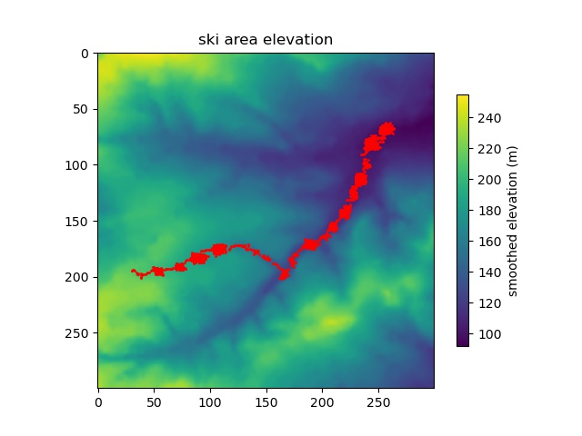
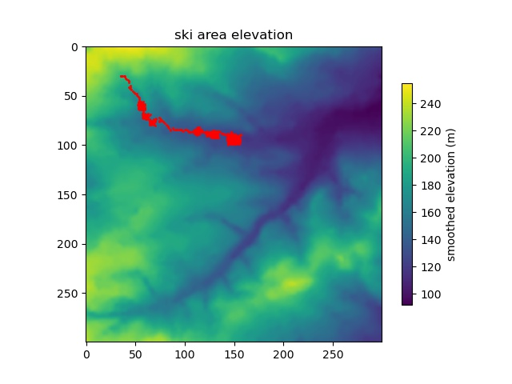

The objective of this project is to read-in a file containing the
elevation data of a ski area (grid style, space seperated text format) and then
to calculate the maximum gradient at each point within the ski area.
A plot must be created of elevation and maximum gradient,
and the maximum gradient written to an output file with the same format as the
input file.
The main Python program is in snow.py. The input elevation file is snowslope.txt and
the output file is gradient.txt. Cell separation is assumed to be 1 metre
and elevation is in metres.
 Figure 1. Ski area elevation. The grid is 300x300. Maximum
elevation is 255 m and minimum elevation is 92 m.
The gradient is calculated at each raster cell by comparing the elevations in the eight surrounding cells. Gradient is calculated in a north-south direction, east-west direction, northeast-southwest, and northwest-southeast. The absolute of the maximum gradient is then plotted for each cell.

Figure 2. Maximum gradient at each raster cell.
Each cell is surrounded by eight others (apart from the boundary cells).
It would be possible to calculate the gradient between the central cell
(Cell 0, in Figure 3) and all of the eight surrounding cells. In this
way there would be a gradient to the north, a gradient to the south, to the northwest,
southest etc. However, in order to have a better representative gradient for
the central cell it was decide to take an average gradient in each of the
primary orientations; north-south, east-west, northeast-southwest, and
northwest-southeast.
 Figure 3. The centre of each raster cell and its surrounding cells.
In this way the average north-south gradient is (elevation of cell 2 minus elevation of cell 7)/2.0. The average northwest-southeast gradient is (elevation cell 1 minus elevation cell 8)/2.0*(sqrt(2)).
This method works for all the internal cells. For the boundary cells a slight modification is required. If Cell 0 falls on the northern boundary of the model then the north-south gradient is given by (elevation of cell 0 minus elevation of cell 7)/1.0. Similarly, if Cell 0 is in the northwest corner of the model then the northwest-southest gradient is given by (elevation of cell 0 minus elevation of cell 8)/sqrt(2). The northeast-southwest gradient is assumed to be zero.
It would have been possible to apply this methodology by looping through all cells and including a number of IF clauses, however the code runs quicker if we loop through the internal cells first and then have seperate loops for each boundary
The absolute gradient in all four directions is calculated and the maximum value stored and printed in the gradient.txt file.
It was decided to use the python numpy library. This contains numpy arrays which simple to create and index. The numpy.loadtxt function is also very useful for loading a regular text grid file directly into an array.
Here we modify the previous program to calculate the path of a downhill skier through the terrain. The main Python program is in skier.py. The input elevation file is snowslope.txt
At each point we calculate the direction of maximum downhill gradient: north=0, northeast=1, east=2, southeast=3, south=4, southwest=5, west=6, northwest=7.
The skier is dropped randomly onto the mountain. He moves in the maximum downhill direction until he skis off the map or reaches a maximum number of steps
Sometimes the skier gets stuck in a small bowl, with no downhill escape. In this case he jumps in a random direction for a predefined maximum distance (3 units). Sometimes he gets stuck in a bowl which is too big to jump out of ! To reduce the number of small bowls we also smooth the elevation file before he starts his run.

Figure 4. Skier having a long run.

Figure 5. Skier gets stuck in a large bowl that he cannot jump out of.
The submission should include all the code and data needed to run the project, along with instructions as to how to run it. Code written by you should be supplied as source code. The submission should also include a short document (under (usually much under) 2000 words) detailing the intention of the software, issues during development and how these were overcome (or not), general sources used, the thought processes going into the software design, and the software development process followed. This document is intended to give a brief context for the software, explaining how it ended up how it is, such that any issues can be understood and the work can be assessed appropriately; it is not intended to be a lengthy investigation into the problem area solved by the software, unless that is absolutely necessary for understanding the software. The specific Assignment 2 Marking Scheme applies. Please make sure there is a simple README file and LICENCE and a document that details the development, if the code works as intended, and what versions should be examined for assessment. Submission of the project should be by uploading a zip file containing all the relevant components to Minerva.